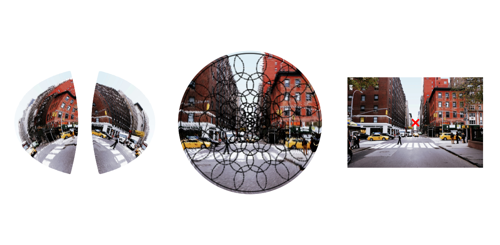

probably going to remove this
[1]:
from torch import nn
import numpy as np
import matplotlib.pyplot as plt
# let's also create our retinal transform and fixator
from foveation.sensing.retina import RetinalTransform
from foveation.sensing.policies import MultiRandomSaccadePolicy
from foveation.demo import get_image_as_batch
from foveation.arch.knnvit import KNNPartitioningPatchEmbedding
device = "cpu"
fov = 16
cmf_a = 2
resolution = 224
img_batch = get_image_as_batch(path='streetview.jpg', device=device)
start_res = img_batch.shape[2]
retinal_transform = RetinalTransform(resolution=resolution, start_res=start_res, device=device, auto_match_cart_resources=True, fov=fov, cmf_a=cmf_a)
patch_embed = KNNPartitioningPatchEmbedding(
3,
384,
resolution,
fov,
cmf_a,
auto_match_cart_resources=1,
in_cart_res=resolution,
cart_patch_size=resolution//8,
device=device,
force_patches_less_than_matched=True,
max_coord_val='auto',
sample_cortex='geodesic',
)
found resolution 160 giving 49963 points (desired: 50176)
Auto-matched resolution to 160 (49963 sampling coordinates) to best match 50176 cartesian pixels.
found resolution 160 giving 49963 points (desired: 50176)
/Users/nblauch/git/foveation/foveation/arch/knn.py:39: UserWarning: To copy construct from a tensor, it is recommended to use sourceTensor.detach().clone() or sourceTensor.detach().clone().requires_grad_(True), rather than torch.tensor(sourceTensor).
num_neighbors = torch.minimum(torch.tensor(self.k*m), torch.tensor(self.in_coords.shape[0]))
found resolution 6 giving 59 points (desired: 64)
found resolution 6 giving 59 points (desired: 64)
100%|██████████| 59/59 [00:02<00:00, 20.80it/s]
/opt/homebrew/Caskroom/miniforge/base/envs/knnconv1/lib/python3.13/site-packages/torch/functional.py:554: UserWarning: torch.meshgrid: in an upcoming release, it will be required to pass the indexing argument. (Triggered internally at /Users/runner/work/pytorch/pytorch/pytorch/aten/src/ATen/native/TensorShape.cpp:4324.)
return _VF.meshgrid(tensors, **kwargs) # type: ignore[attr-defined]
100%|██████████| 59/59 [00:06<00:00, 9.19it/s]
[2]:
from scipy.spatial import ConvexHull
from foveation.utils import IMAGENET_MEAN, IMAGENET_STD
def plot_partitioning_outline(patch_embed, ax, sub_coords='cartesian'):
coords = getattr(patch_embed.in_coords, sub_coords).cpu()
# cluster_assignments = patch_embed.partitioning.cpu()
knn_indices = patch_embed.knn_indices.cpu()
num_clusters = len(patch_embed.out_coords)
# Plot all input coordinates as background
ax.scatter(coords[:,0], coords[:,1], s=1, c='lightgray', alpha=0.3)
# For each selected unit, draw outline of its cluster
for i, unit_idx in enumerate(range(num_clusters)):
# Get points belonging to this cluster
cluster_mask = knn_indices[:,unit_idx]
cluster_mask = cluster_mask[cluster_mask < len(coords)] # remove padding tokens
cluster_coords = coords[cluster_mask]
hull = ConvexHull(cluster_coords)
# Plot the convex hull outline
for simplex in hull.simplices:
ax.plot(cluster_coords[simplex, 0], cluster_coords[simplex, 1],
color='k',
# color=colors[i],
linewidth=1, alpha=0.4)
# Fill the hull area
hull_points = cluster_coords[hull.vertices]
def plot_fixated_images(fixator, patch_embed, images, ax, sub_coords='cartesian', size=3, cart_size_mult=1, ax2=None, fix_loc=[0.5,0.5], ax3=None):
fixated_image = fixator(images, fix_loc=fix_loc)[0].clone().cpu().numpy().T # get first fixation
print(fixated_image.shape)
fixated_image = fixated_image * IMAGENET_STD + IMAGENET_MEAN
fixated_image = np.clip(fixated_image, 0, 1)
in_coords = patch_embed.in_coords
coords = getattr(in_coords, sub_coords)
rf_size = in_coords.polar[:,0].cpu().numpy()
rf_size = rf_size + np.sort(rf_size)[1] # add second smallest value
rf_size = 0.05*(rf_size / rf_size.min())
if sub_coords == 'cartesian':
s = cart_size_mult*rf_size
else:
s = size
ax.scatter(x=coords[:,0].cpu().numpy(), y=coords[:,1].cpu().numpy(), c=fixated_image, s=s, vmin=0, vmax=1)
if ax2 is not None:
im_color = images[0].cpu().numpy().transpose(1,2,0)*IMAGENET_STD + IMAGENET_MEAN
im_color = np.clip(im_color, 0, 1)
ax2.imshow(im_color)
h = im_color.shape[0]
w = im_color.shape[1]
plt.scatter(w*fix_loc[1], h*fix_loc[0], color='r', marker='x')
return fixated_image, images
def plot_patches(patch_embed, fixated_image, nrows=4, ncols=16):
in_coords = patch_embed.in_coords
knn_coords = patch_embed.knn_coords.cpu().numpy()
knn_indices = patch_embed.knn_indices.cpu().numpy()
# Determine grid size based on number of units
num_units = nrows*ncols
total_units = knn_coords.shape[1]
assert num_units <= total_units
plot_units = sorted(np.random.choice(total_units, num_units, replace=False))
print(plot_units)
fig, axes = plt.subplots(nrows, ncols, figsize=(ncols, nrows))
# Flatten axes array for easier indexing
axes_flat = axes.flatten() if num_units > 1 else [axes]
for ii, unit_ind in enumerate(plot_units):
ax = axes_flat[ii]
unit_coords = knn_coords[:,unit_ind]
knn = knn_indices[:, unit_ind]
unit_coords = unit_coords[knn < in_coords.shape[0]]
knn = knn[knn < in_coords.shape[0]]
unit_img = fixated_image[knn]
ax.scatter(x=unit_coords[:,0], y=unit_coords[:,1], c=unit_img, s=30, marker='o')
ax.axis('off')
ax.axis('equal')
# Hide unused subplots
for i in range(num_units, len(axes_flat)):
axes_flat[i].axis('off')
plt.show()
[3]:
from ipywidgets import interact, IntSlider, FloatSlider
# from plotting import plot_fixated_images, plot_partitioning_outline, plot_patches
@interact(
cart_size_mult=FloatSlider(min=0, max=3, step=0.01, value=0.56),
x_loc=FloatSlider(min=0,max=1,step=0.01, value=0.66),
y_loc=FloatSlider(min=0,max=1,step=0.01, value=0.56),
)
def plot_partitioned_image(cart_size_mult=0.56, x_loc=0.5, y_loc=0.5):
fig, axs = plt.subplots(1, 3, figsize=(6,3), dpi=200)
plot_partitioning_outline(patch_embed, axs[1], sub_coords='cartesian')
fixated_image, _ = plot_fixated_images(retinal_transform, patch_embed, img_batch, axs[1], sub_coords='cartesian', ax2=axs[2], cart_size_mult=cart_size_mult, fix_loc=[1-y_loc, x_loc])
p_coords = patch_embed.in_coords.plotting.cpu().numpy()
axs[0].scatter(x=p_coords[:,0], y=-p_coords[:,1], c=fixated_image, s=1)
axs[0].set_xlim(-1.1, 1.1)
axs[0].set_ylim(-1.1, 1.1)
for ax in axs:
ax.axis('equal')
ax.axis('off')
plt.tight_layout()
plt.show()
plot_patches(patch_embed, fixated_image, nrows=1, ncols=16)
plot_partitioned_image(x_loc=0.5, y_loc=0.5)
(49963, 3)

[np.int64(8), np.int64(16), np.int64(17), np.int64(19), np.int64(20), np.int64(22), np.int64(23), np.int64(28), np.int64(31), np.int64(41), np.int64(42), np.int64(44), np.int64(46), np.int64(48), np.int64(51), np.int64(58)]